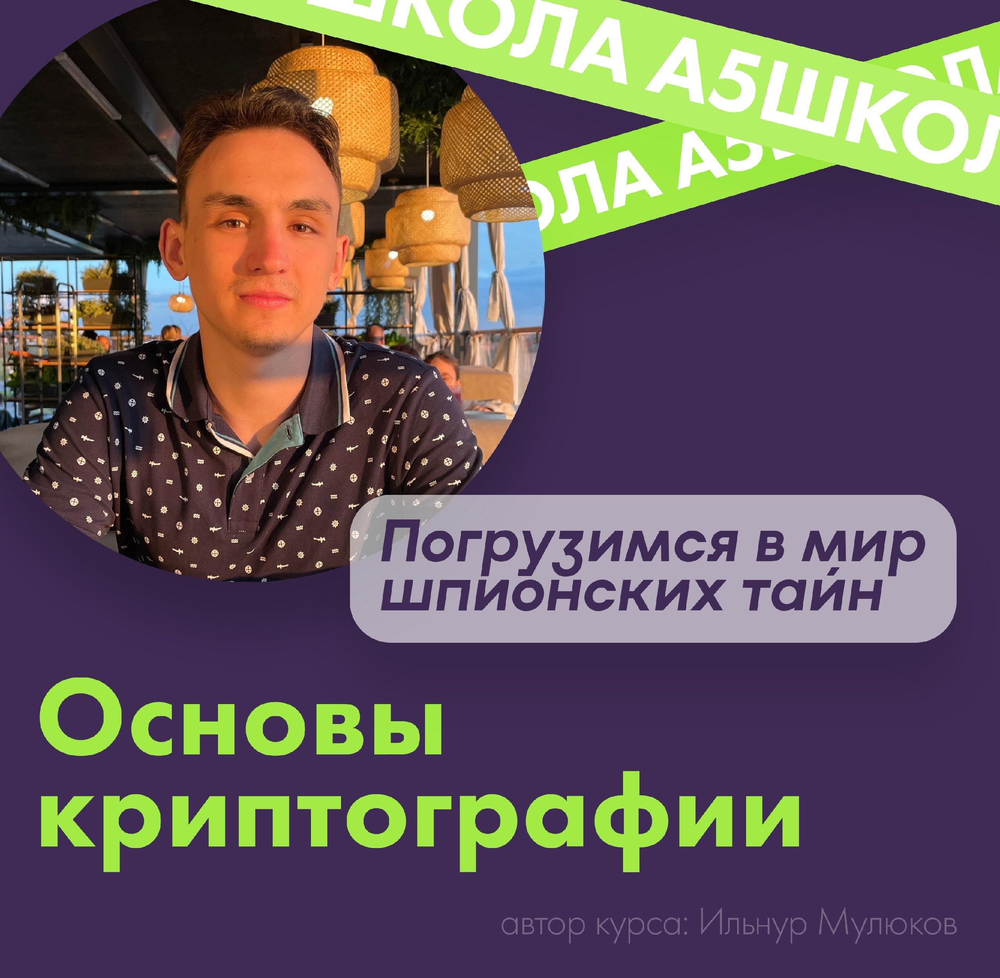
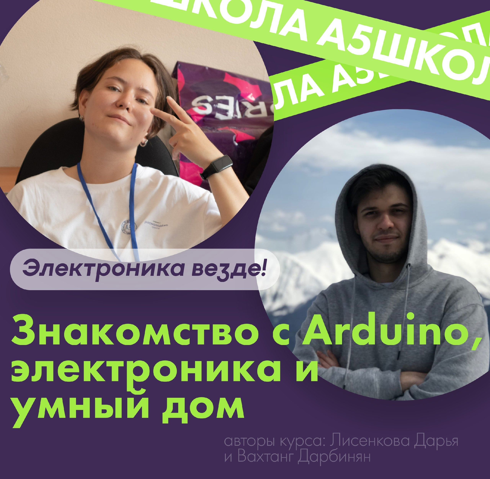
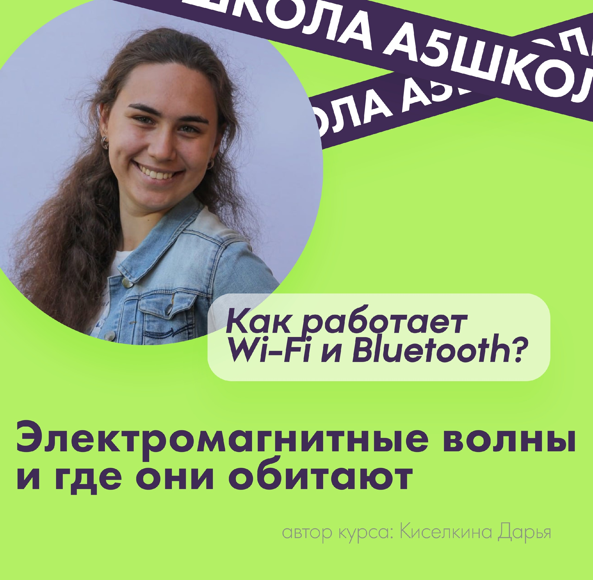
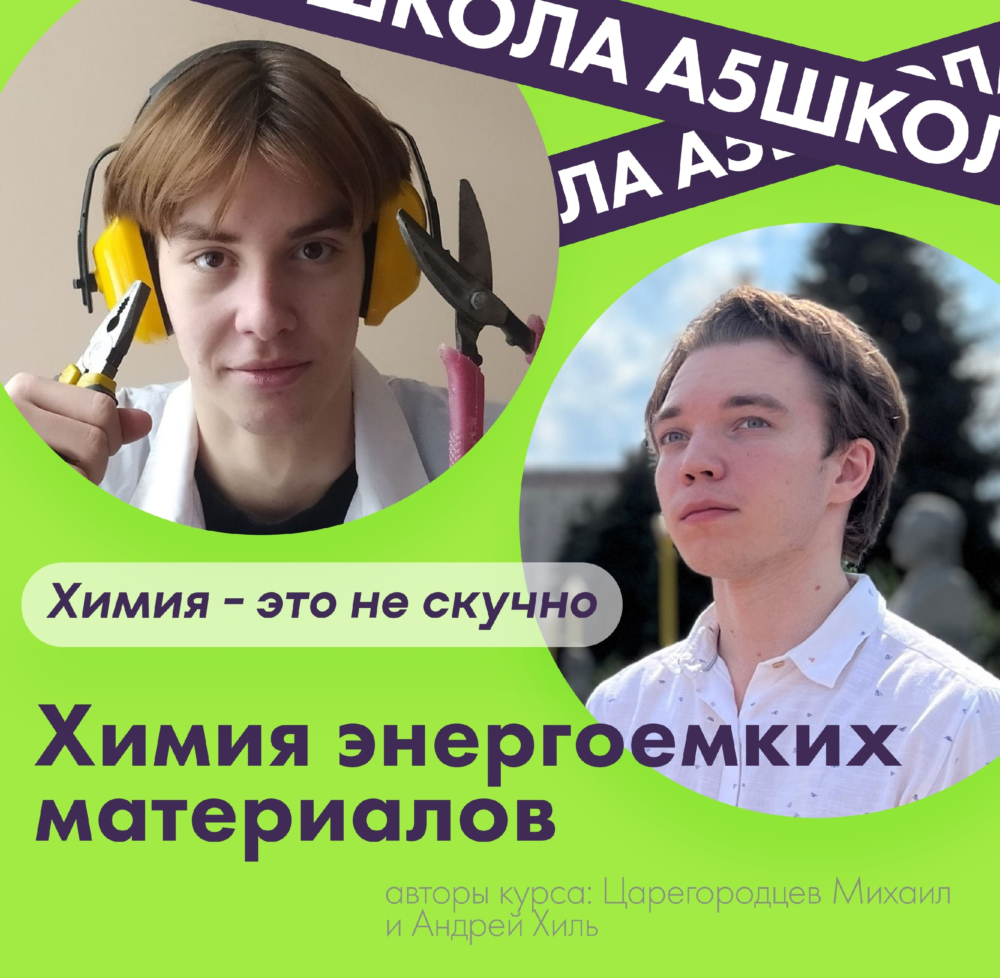
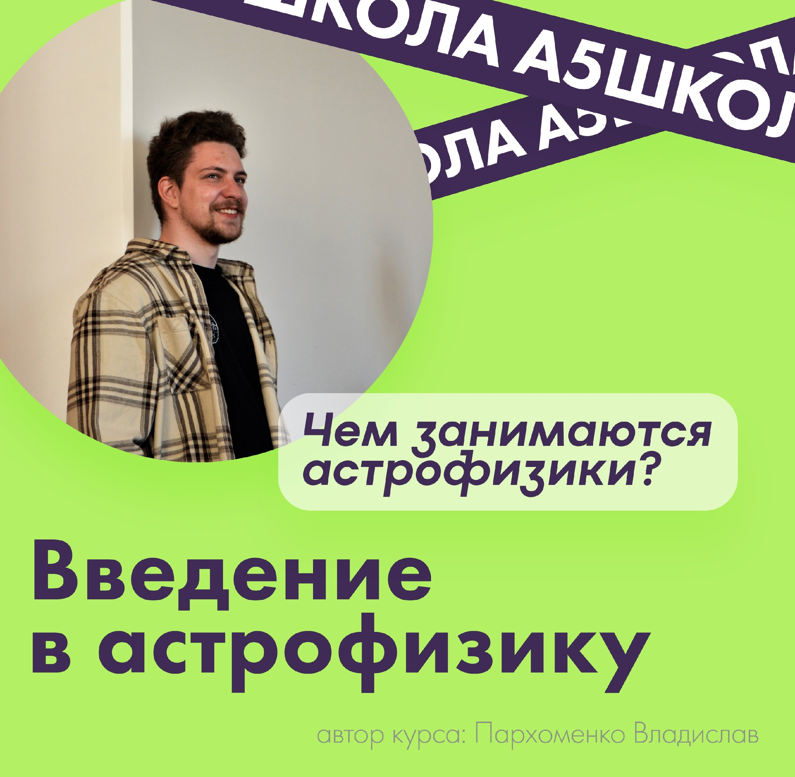
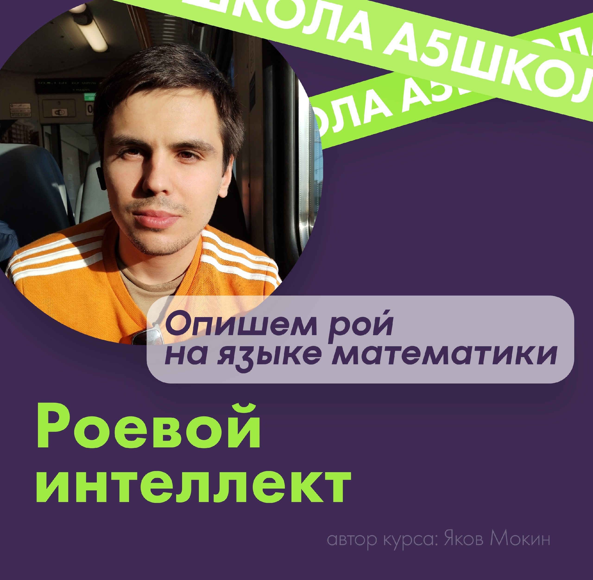
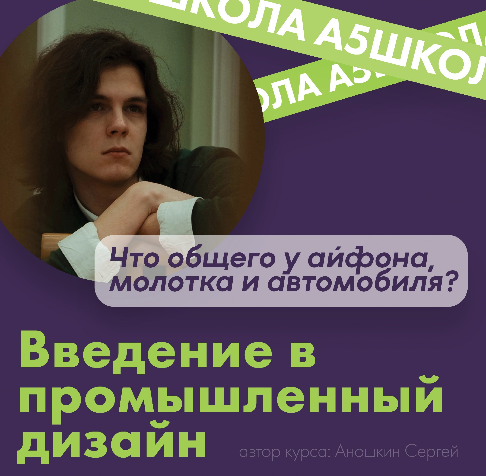

💫А сейчас давай познакомимся с курсами поближе💫
Основы криптографии.
Преподаватель: Ильнур Мулюков
На этом мини-курсе вы узнаете,
как скрывать информацию от посторонних глаз и что делать, если
вы сами столкнулись с шифрограммой. Мы поговорим о базовых методах шифрования, в том числе
о шифрах Цезаря и Виженера. Также вы получите знания о дешифровке сообщений и стеганографии!
За 5 часов вы погрузитесь в мир шпионских тайн, сможете
почувствовать себя настоящим криптоаналитиком и подтянуть свои
знания по математике и информатике!
Знакомство с Arduino, электроника и умный дом.
Преподаватель: Лисенкова Дарья и Вахтанг Дарбинян
Электроника везде! Это, можно сказать,
некий слоган современной жизни: умный дом, умные гаджеты, электрические зубные щётки-фены-расчёски,
умные системы общественного транспорта и роботы на производстве. Со всеми этими вещами мы сталкиваемся
в повседневной жизни. Наш курс поможет вам разобраться, как они устроены.
Мы узнаем, что такое микроконтроллеры и зачем они нужны. Поговорим о том, как создать "умный дом" на
основе платы Arduino. Конструктор Arduino хорош тем, что в его системе можно использовать любые элементы умного дома, от разных производителей.
Эта возможность позволяет нам подбирать любые компоненты электроники, для реализации решения собственных задач.
Также мы узнаем, какие модули и датчики находятся в основе умного дома, каким образом они справляются со своими функциями
и как объединить их все в единую систему
Электромагнитные волны и где они обитают.
Преподаватель: Киселкина Дарья
В новом курсе «Электромагнитные волны и где они обитают» можно будет познакомиться с
«волшебным» разделом физики – колебания и волны.
За несколько занятий мы узнаем основные понятия, казалось бы, обычного школьного раздела, приоткроем
дверь в интересный мир распространения электромагнитных волн, а ещё поймём, как передаётся информация по
телевизору, радио и как так получается, что телефоны работают без проводов!
Задавались ли вы вопросом, как работает Wi-Fi и Bluetooth? Или почему несколько лет назад мы
перешли с аналогового на цифровое ТВ? Всё это и даже чуть-чуть больше вы сможете узнать на этом курсе
Химия энергоемких материалов.
Преподаватели: Царегородцев Михаил и Андрей Хиль
 Химия- это не всегда скучные медленные реакции. Иногда эти реакции проходят
быстро, ярко и громко. Мы расскажем обо всем химическом (и не только), что может хлопнуть или вспыхнуть. Почему одни вещества стабильны,
а другие самоуничтожаются от малейшего прикосновения?
На этом зажигательном курсе мы расскажем обо всем, что (с химической точки зрения) не хочет существовать. Также многие из изучаемых
веществ будут наглядно представлены учащимся в ходе демонстраций.
Введение в астрофизику.
Преподаватель: Пархоменко Владислав
Основная задача этого курса – создать у слушателей первичное представление
о астрофизике, одной из самых динамично развивающихся направлений современной науки. В рамках наших занятий мы поговорим о истории
возникновения этой науки, о ее основных предметах изучения и о том, чем занимаются современные астрофизики. Мы узнаем о строении и
эволюции звезд, компактных объектах, космологии. Курс будет затрагивать разные аспекты астрономии, механики и ядерной физики.
Роевой интеллект.
Преподаватель: Мокин Яков
Прежде чем прочитать, что представляет из себя курс, задайтесь вопросом
"Что такое роевой интеллект?" Какие ассоциации у вас возникают? Может муравейник с его, на первый взгляд, жёсткой иерархией и
чётко отлаженными взаимодействиями? А может пчелиный рой? Или стая птиц при перелёте на новое место? Думаю, у большинства
возникли ассоциации, навеянные именно реальными примерами живой природы. Мы, вдохновляясь реальными прототипами,
посмотрим на разные варианты их взаимодействия: заглянем в устройство муравейника, пчелиного гнезда и других систем, и
опишем их на языке математики - и подумаем, как и где можно применить подобные модели.
Введение в промышленный дизайн. На грани искусства и инженерии.
Преподаватель: Аношкин Сергей
Все, практически все, что окружает нас сегодня так или иначе прошло
через взгляд и руки промышленных дизайнеров.
На этом курсе мы подробно разберём, что вообще такое промышленный дизайн?
Что общего у айфона, молотка и автомобиля? Как пром-дизайнеры создают новые решения в индустрии и меняют наше
привычное окружение? Что нужно сделать, что бы работать в ferrari или apple?
И конечно же ответим на главный вопрос: к чему пром-дизайн все-таки ближе, к искусству или же к инженерии?
Скорей выбирай курсы тебе по душе и записывайся к нам через
💜телеграмм-бота💜